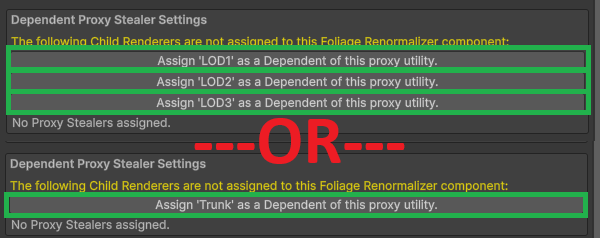
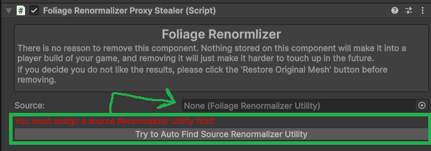
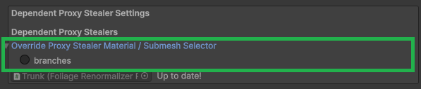
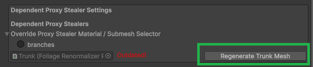

Proxy Stealers
This guide applies to separated models (e.g. separate trunk and leaf meshes) and LOD group setups. If your foliage is a single mesh, you can skip it.
When your foliage is split across multiple renderers, you want them all to share one proxy mesh so their normals stay consistent. The Foliage Renormalizer Proxy Stealer component does exactly that: it uses the generated proxy mesh and mesh-generation settings of a selected Source Foliage Renormalizer Utility component.
You set your main leaf renderer up with the Utility component (see First Steps), and every other renderer — additional LODs, the trunk, etc. — gets a Proxy Stealer pointing back at it.
Adding Proxy Stealers (Automatic)
The easiest way. At the bottom of the Foliage Renormalizer Utility component, under Dependent Proxy Stealer Settings, the tool lists child renderers that aren't yet assigned. Click the button for each renderer you want to include to automatically add and wire up a Proxy Stealer component.

Note
It's fine to leave some child renderers unassigned — you may not want to renormalize everything (for example, impostor meshes).
Adding Proxy Stealers (Manual)
If the automatic method doesn't work for your setup, you can add Proxy Stealers by hand:
- Add a Foliage Renormalizer Proxy Stealer component to the renderer.
- Press Try to Auto Find source Renormalizer Utility.
- If that fails, assign the Source Utility manually.

Submesh / Material Mask for Proxy Stealers
Only unique materials — ones that appear only on proxy stealers and not on the source renderer — need to be configured here. Expand Override Proxy Stealer Material / Submesh Selector and use the same selection rules as the submesh selection in First Steps: include the leaf submeshes, exclude trunks.

Regenerating Proxy Stealer Meshes
After generating your main foliage mesh (in Grass Mode or General Mode), you must regenerate each Proxy Stealer's mesh. Double-check each stealer's submesh selection, then click its regenerate button.
